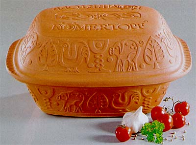

 Hmmmm... Sehr lecker.
Das Rezept ist wirklich furchtbar einfach:
- 350 g Reis
- 500 ml (Instant) Brühe
- 500 g Hackfleisch
- 500 g Paprika
- Salz, Pfeffer, Chilli nach Bedarf
Den Römertopf wässern und den Reis und die Brühe hineingeben. Dann das Hackfleisch mit den gewürfelten Paprikas vermischen, würzen und auf den Reis einfach obenauf legen.
Danach das ganze eine Stunde bei 200° C im Ofen schmoren lassen.
Wow - in 3 Minuten gemacht.
Einziger Wermutstropfen: Etwa die hälfte der Reiskörner wurde bei mir nicht richtig weich - und zwar gerade die die völlig von der Brühe bedeckt und unter dem Fleisch auch garantiert nach unten gedrückt waren. Da muss ich nochmal nachforschen.
Quelle: chefkoch.de